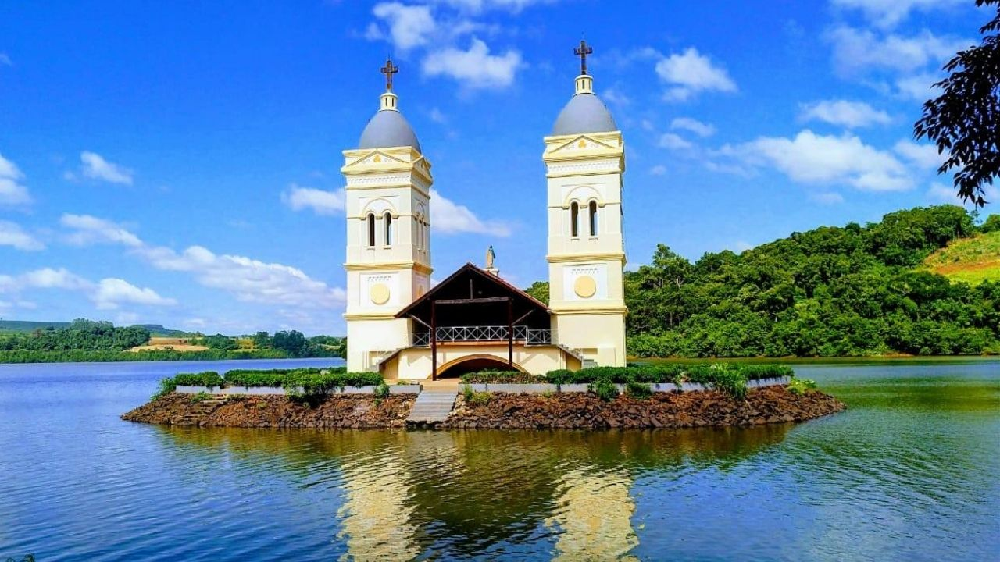
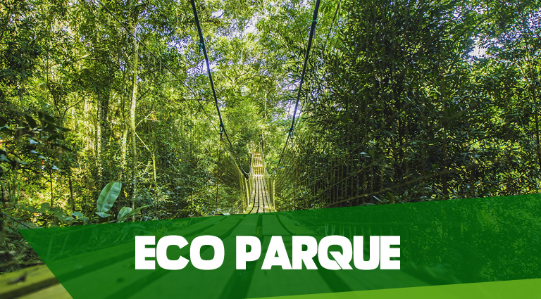
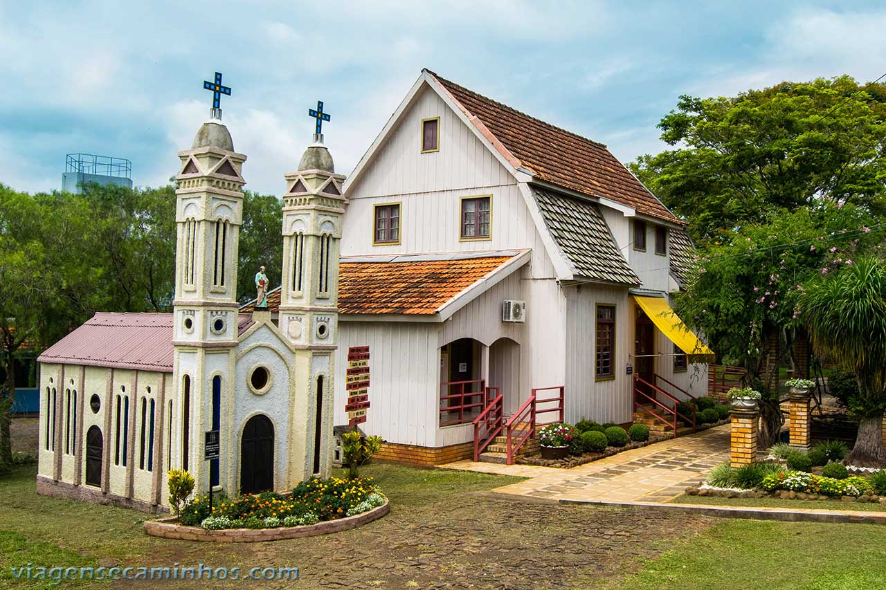
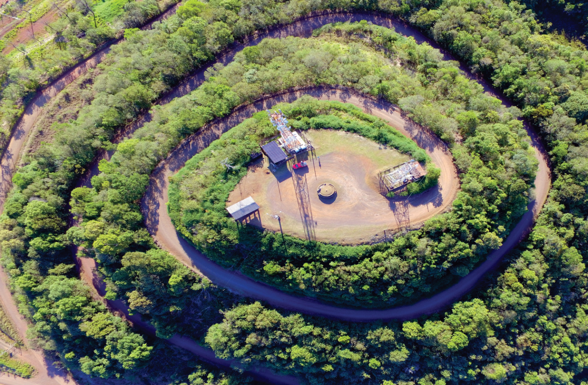

Pontos turísticos
- Torres da Antiga Igreja Matriz São Pedro
- Itá Eco Turismo
- Casa da Memória Alberton
- Mirante Caracol
Torres da Igreja Matriz São Pedro

As torres da antiga Igreja são as únicas estruturas que ainda restam da antiga cidade de Itá, que foi inundada pela represa e ficou no fundo do Rio Uruguai.
Itá Eco Turismo

Atrações disponíveis no parque: Tirolesa, Arvorismo, Airsoft, Funicular, Mirante e Eco Parque.
Casa da Memória Alberton

Restaurada na nova cidade, a casa Alberton funciona como um espaço cultural. A construção tem como principais características a estrutura das paredes em peças de madeiras com encaixes e a cobertura com acentuada inclinação.
Mirante Caracol

Com 650 metros de altitude, o mirante caracol oferece uma vista exuberante da maior parte da cidade, do lago formado pela água represada do rio Uruguai e da Usina Hidrelétrica Itá.